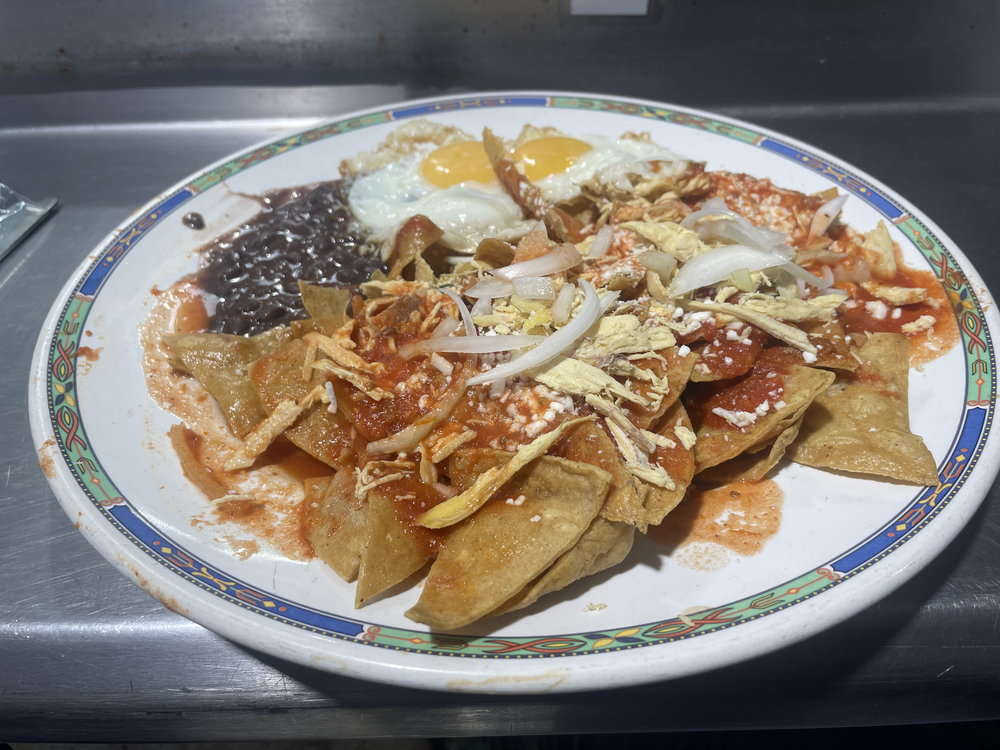
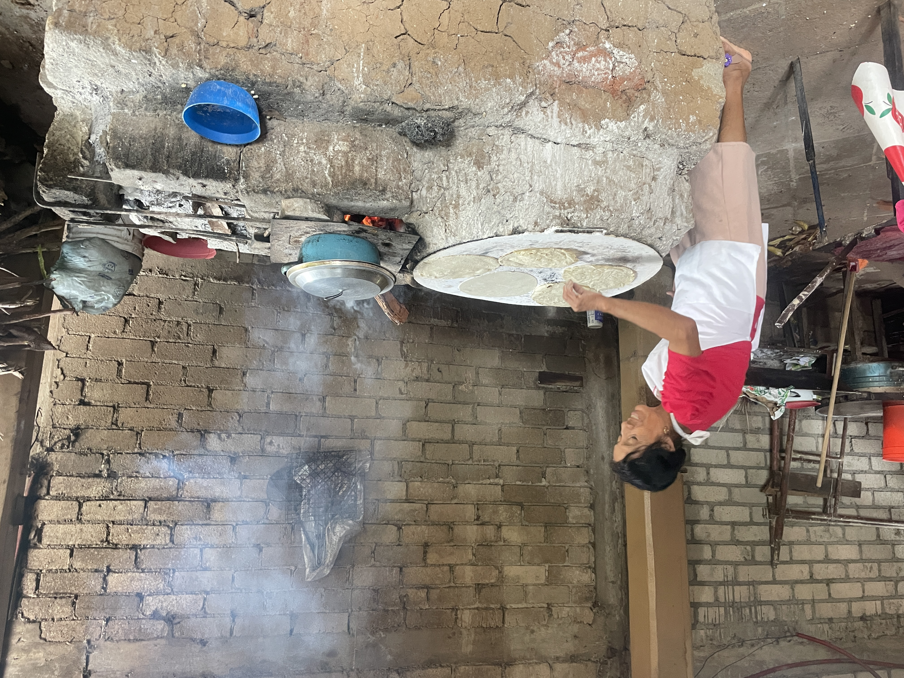

23 Living in
a fish bowl
Where can I live in peace here?
An integration that just won’t succeed,
the expat tipping point.

Burro in Spanish means "donkey." The burrito is rarely found in Mexico City because it originated in the countryside of northern Mexico, where people are called "Northenios." After a long day of working in the fields, the farmers' wives would bring food. These were wraps filled with vegetables, rice, and meat, delivered by donkey. "There's the burrito!" the farmer would say, thus giving birth to the dish's name.
 It's been a while since the last blog post, and even from home, there were a few messages about the absence of a blog post, and with that, of course, came the question of whether everything was still going well. I still have to think about where we left off, but now it's coming back to me, after all those changes: a visit to the Netherlands, starting in Mexico, and then back to Paraguay. After a different country every month, the idea was to find stability in Mexico City. In January, I was still very satisfied with my Bittensor earnings, which I managed to maintain without too much maintenance while backpacking. However, in March, things took a turn for the worse when our currency, the Tao, plummeted to a record low, while it had been worth many times more the previous year, and I thought I was on top of the world. During this period, I had a very nice apartment in the Roma Norte neighborhood of Mexico City, where I wasn't exactly happy, due to the terrible commercialization and the lack of basic dining options. This declining Tao also added financial worries. Because the people I interact with on Bittensor are always so positive about the future of the platform, and therefore also the currency, I hadn't anticipated this enormous decline. Had I known this in time, I could have at least exchanged a few for regular money, which is of course much more stable. A valuable lesson for the future. I call my brother, Sander, and my mom and tell them there's no other option than to live in a hostel for a while. The deposit I'm due back from the man in the luxury apartment will never arrive in my account in the Netherlands, and for three weeks we've been calling and emailing daily to find out where it's gone. The hostel is already my third place to live in Mexico City. And while moving isn't ideal, it's fortunate that by moving around, you at least get to know Mexico City a little better. It's not so bad to occasionally chat with one of the seven other travelers in the room. There's a co-working space, and I spend most of the week there, except for one evening when I mingle with the backpackers and we go to a party together.
It's been a while since the last blog post, and even from home, there were a few messages about the absence of a blog post, and with that, of course, came the question of whether everything was still going well. I still have to think about where we left off, but now it's coming back to me, after all those changes: a visit to the Netherlands, starting in Mexico, and then back to Paraguay. After a different country every month, the idea was to find stability in Mexico City. In January, I was still very satisfied with my Bittensor earnings, which I managed to maintain without too much maintenance while backpacking. However, in March, things took a turn for the worse when our currency, the Tao, plummeted to a record low, while it had been worth many times more the previous year, and I thought I was on top of the world. During this period, I had a very nice apartment in the Roma Norte neighborhood of Mexico City, where I wasn't exactly happy, due to the terrible commercialization and the lack of basic dining options. This declining Tao also added financial worries. Because the people I interact with on Bittensor are always so positive about the future of the platform, and therefore also the currency, I hadn't anticipated this enormous decline. Had I known this in time, I could have at least exchanged a few for regular money, which is of course much more stable. A valuable lesson for the future. I call my brother, Sander, and my mom and tell them there's no other option than to live in a hostel for a while. The deposit I'm due back from the man in the luxury apartment will never arrive in my account in the Netherlands, and for three weeks we've been calling and emailing daily to find out where it's gone. The hostel is already my third place to live in Mexico City. And while moving isn't ideal, it's fortunate that by moving around, you at least get to know Mexico City a little better. It's not so bad to occasionally chat with one of the seven other travelers in the room. There's a co-working space, and I spend most of the week there, except for one evening when I mingle with the backpackers and we go to a party together.
As soon as I moved into the hostel, everything changed again, typical of this unpredictable life. So I decided to leave the low-budget hostel and look for something more stable. Maybe not a palace of my own, but not a hostel either. The middle ground is an Airbnb in a shared apartment. A bit more local, but definitely not too local, and within walking distance of Park Mexico for the bachata parties. This brought me to the Escandon neighborhood, bordering the popular Condessa neighborhood. I'm still getting used to the people here, whom I don't always understand, but I do feel like I'm in a much better place here than in the previous three places.
 My attempts to maintain my friendship with Ernesto are proving difficult. It might be the first time I've thought about becoming good friends with someone on this trip, but to actually see each other, a whole bunch of texts have to fly back and forth. And as fun as those texts are, as soon as you try to arrange something—"Okay, Friday at 8 PM then?"—the conversation miraculously takes a different turn. You've been on your phone for 20 minutes, and what you actually used it for—arranging to meet up—hasn't worked out. Maybe I'm just very businesslike, or even "cold," as people sometimes say, but I find it so pointless to spend so much time texting, and I don't understand why other people enjoy it. For example, I don't have TikTok and I don't watch Reels. We're already so overstimulated. The other day, I was trying to stay in shape at the Smartfit gym where I have a membership. They'd mounted a billboard on the treadmill, so you're looking right at a sign advertising Dove deodorant. How can we bombard people with advertising? Or are people even allowed to stare into space for a moment?
My attempts to maintain my friendship with Ernesto are proving difficult. It might be the first time I've thought about becoming good friends with someone on this trip, but to actually see each other, a whole bunch of texts have to fly back and forth. And as fun as those texts are, as soon as you try to arrange something—"Okay, Friday at 8 PM then?"—the conversation miraculously takes a different turn. You've been on your phone for 20 minutes, and what you actually used it for—arranging to meet up—hasn't worked out. Maybe I'm just very businesslike, or even "cold," as people sometimes say, but I find it so pointless to spend so much time texting, and I don't understand why other people enjoy it. For example, I don't have TikTok and I don't watch Reels. We're already so overstimulated. The other day, I was trying to stay in shape at the Smartfit gym where I have a membership. They'd mounted a billboard on the treadmill, so you're looking right at a sign advertising Dove deodorant. How can we bombard people with advertising? Or are people even allowed to stare into space for a moment?
 I certainly won't miss the lingering on the street. People walking five dogs and taking up half the street, and then also on their phones. I was often forced to walk more on the street than on the sidewalk. Is it that bad with cell phones on the streets in the Netherlands? Ugh, I hope not. Time and again, you're amazed at what happens here. You ask someone the name of a shop, and before you've even finished your question, you get a "¿mande?" back, which means "what did you say?" But it's said so often and automatically here that sometimes it feels like they're already shouting it before they've even listened. You decide to go in the direction you thought you heard, and just to be sure, ask someone else. They then point completely the other way. Then you say: "Huh, I honestly thought it was more like the other way." To which the person says, "Oh yeah, you're absolutely right, it's there." Musicians jump in front of you and pressure you to pay. A tip, rather than a voluntary contribution, is a percentage starting at 10%. You give it more because you're expected to, than because you genuinely enjoyed it. I buy a new charging cable, and the salesperson shamelessly says afterward, "If you could write a 5-star review, thank you very much in advance." A taxi driver blasts the music, someone else tries to change my combination lock at the Smartfit. Every time, I'm still a little perplexed. Is it really so much to ask to just act normal? After four months of dancing in Park Mexico, I message the organizer to ask if he could add me to the WhatsApp group. I send an enthusiastic message, and believe it or not, there's no way to reply. Such a small effort to say, "Great, welcome!" would make such a big difference. In that respect, there's much more hierarchy, and it's also a bit of a see-and-be-seen thing, and people are very picky about who they hang out with and who they dance with. Personally, I'm much more the type who just dances with everyone, even if it's someone's first time. Maybe that's just part of the big city, that it's so big that you live in certain bubbles. You say hi once and don't get one back. Or you're expected to say hi, but you don't, and at some point you don't know what's right anymore. When I went to order a taco and pay, I said, "Ouch, it's a bit spicy," to which the man didn't react at all. When you first come to Mexico City and experience that, you're quite shocked to be ignored like that even though you're trying to be nice. But at some point, I learned to quickly let such moments slide.
I certainly won't miss the lingering on the street. People walking five dogs and taking up half the street, and then also on their phones. I was often forced to walk more on the street than on the sidewalk. Is it that bad with cell phones on the streets in the Netherlands? Ugh, I hope not. Time and again, you're amazed at what happens here. You ask someone the name of a shop, and before you've even finished your question, you get a "¿mande?" back, which means "what did you say?" But it's said so often and automatically here that sometimes it feels like they're already shouting it before they've even listened. You decide to go in the direction you thought you heard, and just to be sure, ask someone else. They then point completely the other way. Then you say: "Huh, I honestly thought it was more like the other way." To which the person says, "Oh yeah, you're absolutely right, it's there." Musicians jump in front of you and pressure you to pay. A tip, rather than a voluntary contribution, is a percentage starting at 10%. You give it more because you're expected to, than because you genuinely enjoyed it. I buy a new charging cable, and the salesperson shamelessly says afterward, "If you could write a 5-star review, thank you very much in advance." A taxi driver blasts the music, someone else tries to change my combination lock at the Smartfit. Every time, I'm still a little perplexed. Is it really so much to ask to just act normal? After four months of dancing in Park Mexico, I message the organizer to ask if he could add me to the WhatsApp group. I send an enthusiastic message, and believe it or not, there's no way to reply. Such a small effort to say, "Great, welcome!" would make such a big difference. In that respect, there's much more hierarchy, and it's also a bit of a see-and-be-seen thing, and people are very picky about who they hang out with and who they dance with. Personally, I'm much more the type who just dances with everyone, even if it's someone's first time. Maybe that's just part of the big city, that it's so big that you live in certain bubbles. You say hi once and don't get one back. Or you're expected to say hi, but you don't, and at some point you don't know what's right anymore. When I went to order a taco and pay, I said, "Ouch, it's a bit spicy," to which the man didn't react at all. When you first come to Mexico City and experience that, you're quite shocked to be ignored like that even though you're trying to be nice. But at some point, I learned to quickly let such moments slide.
 From the new neighborhood, I also visit a new WeWork location called Insurgentes. It's a hive of activity. There's music blasting, people bring their dogs, and the person across from me drinks beer while working. People from the hallways flock to take their breaks in the common areas I'm limited to. It's best not to show that it bothers you, because sometimes I think if people realize it, they'll go the extra mile. I arrive for work and there's a Gay Pride celebration. I'm getting a little tired of never knowing what to expect. While I'm working, a woman sits down next to me. She picks up her phone and calls for hours to let me know she's arrived safely. Then she brings a yogurt and goes to breakfast. It's late morning now, her bag is still on the desk, and there's a notebook and pen with nothing written in them. I really can't believe the attitudes of some people here. Why would you even come to an office if you're not going to do anything?
From the new neighborhood, I also visit a new WeWork location called Insurgentes. It's a hive of activity. There's music blasting, people bring their dogs, and the person across from me drinks beer while working. People from the hallways flock to take their breaks in the common areas I'm limited to. It's best not to show that it bothers you, because sometimes I think if people realize it, they'll go the extra mile. I arrive for work and there's a Gay Pride celebration. I'm getting a little tired of never knowing what to expect. While I'm working, a woman sits down next to me. She picks up her phone and calls for hours to let me know she's arrived safely. Then she brings a yogurt and goes to breakfast. It's late morning now, her bag is still on the desk, and there's a notebook and pen with nothing written in them. I really can't believe the attitudes of some people here. Why would you even come to an office if you're not going to do anything?
 In many places I visit, I get a surprised look, and as soon as I do something, it quickly becomes very strange. Staff are constantly inquisitive about how you're going up the escalator, whether you're scanning your pass correctly. One day the cones in front of the building are on the left and you have to enter from the right, and the next day the cones are on the right and you have to enter from the left. A wipe over the same wall ten times. A job that could take five minutes takes hours and is accompanied by a tremendous noise. To my great surprise, I read that Mexican people actually top the global rankings when it comes to people who work the most. Well, I have my doubts. Perhaps if you count all the chatting as working time, but even on Fridays at 3:00 PM, there's absolutely no one in the office anymore. I have to chuckle because when no one shows up at the office on Mondays, and I talk about it with the cleaning lady, she says, "On Mondays, even chickens don't lay eggs!"
In many places I visit, I get a surprised look, and as soon as I do something, it quickly becomes very strange. Staff are constantly inquisitive about how you're going up the escalator, whether you're scanning your pass correctly. One day the cones in front of the building are on the left and you have to enter from the right, and the next day the cones are on the right and you have to enter from the left. A wipe over the same wall ten times. A job that could take five minutes takes hours and is accompanied by a tremendous noise. To my great surprise, I read that Mexican people actually top the global rankings when it comes to people who work the most. Well, I have my doubts. Perhaps if you count all the chatting as working time, but even on Fridays at 3:00 PM, there's absolutely no one in the office anymore. I have to chuckle because when no one shows up at the office on Mondays, and I talk about it with the cleaning lady, she says, "On Mondays, even chickens don't lay eggs!"
 It's a business model, probably because it's so noisy that people decide to rent a private office, just to make some extra money. To deal with the noise, I visit a few other offices, hoping it'll be quieter there, but alas. I've visited maybe six other offices, but it's the same story everywhere. I almost give in and get a private office at WeWork, a tiny, isolated room on the 19th floor, but I realize that despite everything, I actually enjoy being able to work among people. So I buy an expensive pair of Bose noise-canceling headphones. I even recently bought the latest Apple Pods 2 Pro with noise cancellation, but they proved insufficient to cope with the noise. It's absurd that I'm even going to make this purchase, but considering everything I've already tried to dampen the noise, I think headphones might offer somewhat better noise cancellation than Apple EarPods. I try out the Bose headphones, but unfortunately, I'm quite disappointed with the quality of the noise cancellation. But then I suddenly realize that the advantage of the Bose headset is that I can combine my sleep earbuds with the headset. It turns out to be a brilliant solution. The double sound barrier makes me feel like I'm in a fishbowl—not exactly pleasant work, but at least it's effective in drowning out the noise and allowing me to focus on programming. I also make another interesting discovery: because I'm working absurd hours at my computer to survive my first year on Bittensor, a very friendly WeWork employee points out to me at 10:30 PM that the floor is closing, but that I could potentially continue working on other floors. And so I discover that there are other floors, which aren't exactly quiet either, but are a bit more pleasant, and sometimes even deserted on Sundays. During the day, I sneak to the call booths on floor 14; at least there aren't constantly being peered in by passersby like on floor 19. You can turn off the lights, put on a hat, but it hardly helps. And then, after 6 p.m., when I'm desperate for a normal chair and most people have left, I move to floor 19 to finish the day. After endless attempts, it's proven to be the least disruptive route. It's unbelievable, but it's the only way I can get any work done.
It's a business model, probably because it's so noisy that people decide to rent a private office, just to make some extra money. To deal with the noise, I visit a few other offices, hoping it'll be quieter there, but alas. I've visited maybe six other offices, but it's the same story everywhere. I almost give in and get a private office at WeWork, a tiny, isolated room on the 19th floor, but I realize that despite everything, I actually enjoy being able to work among people. So I buy an expensive pair of Bose noise-canceling headphones. I even recently bought the latest Apple Pods 2 Pro with noise cancellation, but they proved insufficient to cope with the noise. It's absurd that I'm even going to make this purchase, but considering everything I've already tried to dampen the noise, I think headphones might offer somewhat better noise cancellation than Apple EarPods. I try out the Bose headphones, but unfortunately, I'm quite disappointed with the quality of the noise cancellation. But then I suddenly realize that the advantage of the Bose headset is that I can combine my sleep earbuds with the headset. It turns out to be a brilliant solution. The double sound barrier makes me feel like I'm in a fishbowl—not exactly pleasant work, but at least it's effective in drowning out the noise and allowing me to focus on programming. I also make another interesting discovery: because I'm working absurd hours at my computer to survive my first year on Bittensor, a very friendly WeWork employee points out to me at 10:30 PM that the floor is closing, but that I could potentially continue working on other floors. And so I discover that there are other floors, which aren't exactly quiet either, but are a bit more pleasant, and sometimes even deserted on Sundays. During the day, I sneak to the call booths on floor 14; at least there aren't constantly being peered in by passersby like on floor 19. You can turn off the lights, put on a hat, but it hardly helps. And then, after 6 p.m., when I'm desperate for a normal chair and most people have left, I move to floor 19 to finish the day. After endless attempts, it's proven to be the least disruptive route. It's unbelievable, but it's the only way I can get any work done.
 I'm quitting kizomba because I'm finding it really hard to connect with the group, especially socially, when I only see people once a week. Twice bachata and once kizomba—I'd love to keep doing it, but I feel like I'm always arriving somewhere new, and people have to get used to me all over again. People from Mexico City aren't quick to greet anyone either. They prefer to wait and see. As a result, I've sometimes been surprised by the distant boy next to me during kizomba. I think we could have been in this class for five years without exchanging a single word. But if you manage to break through that barrier and approach them, you often discover they're good people. To my great sorrow, I decided to quit kizomba and focus solely on bachata. Three days a week, I'm practicing a dance. It's working out well, and life is getting a little simpler.
I'm quitting kizomba because I'm finding it really hard to connect with the group, especially socially, when I only see people once a week. Twice bachata and once kizomba—I'd love to keep doing it, but I feel like I'm always arriving somewhere new, and people have to get used to me all over again. People from Mexico City aren't quick to greet anyone either. They prefer to wait and see. As a result, I've sometimes been surprised by the distant boy next to me during kizomba. I think we could have been in this class for five years without exchanging a single word. But if you manage to break through that barrier and approach them, you often discover they're good people. To my great sorrow, I decided to quit kizomba and focus solely on bachata. Three days a week, I'm practicing a dance. It's working out well, and life is getting a little simpler.
 Then comes the next Bittensor blow. While our Tao is just starting to pick up, the group I'm in, where we jointly train an AI model, has become so successful that a whole bunch of other programmers, just like me, are joining like vultures and trying to oust me. Bittensor now has about 100 groups, and our group, called Distributed Training, has always hovered somewhere near the bottom, but now we've climbed to 20th place, and suddenly it's all about much more Tao. Last year, I spent months working on a system to automatically activate these AI computers, or GPUs, but now that the pace is accelerating, it's becoming clear that many shortcomings in this system are still apparent. I have to pull out all the stops to maintain my position. On GitHub, a website for storing code, I'm building a repository called "remote GPU control." I'm so dismayed that my computers could be so easily ousted that I'm making major changes to the monitoring process. I decided to automate all the steps I have to do for Bittensor: installing, updating, monitoring, payments. After months of endless work, a large part of my work is now done at the push of a button. It's become an incredible project that I set up all by myself with a lot of help from various AI tools like ChatGtp and DeepSeek. What once started as a single, simple script with some installations has grown into a massive undertaking. I spent hours automating even the smallest mouse click. Initially, the added value doesn't always seem visible, because it might only be a small effort to click something, but when you have work that runs 24/7, every automated click, especially when you have 30 computers running, is a relief to outsource and frees up time for other things. It took an unprecedented amount of time and a lot of testing, but the result is impressive. This is what motivates me and the big difference compared to a regular job. What I'm setting up now could take a lot of work off my hands in the future. While a baker has to keep baking his bread every day. I have no boss, no meetings, no working hours; I don't know how you can achieve more freedom as a human being than this. For now, I'll just keep my feet on the ground, because I've invested so much time in this project that the value of the group has already diminished considerably. So I'll probably have to look for a new assignment, although the program I wrote could be very useful there too.
Then comes the next Bittensor blow. While our Tao is just starting to pick up, the group I'm in, where we jointly train an AI model, has become so successful that a whole bunch of other programmers, just like me, are joining like vultures and trying to oust me. Bittensor now has about 100 groups, and our group, called Distributed Training, has always hovered somewhere near the bottom, but now we've climbed to 20th place, and suddenly it's all about much more Tao. Last year, I spent months working on a system to automatically activate these AI computers, or GPUs, but now that the pace is accelerating, it's becoming clear that many shortcomings in this system are still apparent. I have to pull out all the stops to maintain my position. On GitHub, a website for storing code, I'm building a repository called "remote GPU control." I'm so dismayed that my computers could be so easily ousted that I'm making major changes to the monitoring process. I decided to automate all the steps I have to do for Bittensor: installing, updating, monitoring, payments. After months of endless work, a large part of my work is now done at the push of a button. It's become an incredible project that I set up all by myself with a lot of help from various AI tools like ChatGtp and DeepSeek. What once started as a single, simple script with some installations has grown into a massive undertaking. I spent hours automating even the smallest mouse click. Initially, the added value doesn't always seem visible, because it might only be a small effort to click something, but when you have work that runs 24/7, every automated click, especially when you have 30 computers running, is a relief to outsource and frees up time for other things. It took an unprecedented amount of time and a lot of testing, but the result is impressive. This is what motivates me and the big difference compared to a regular job. What I'm setting up now could take a lot of work off my hands in the future. While a baker has to keep baking his bread every day. I have no boss, no meetings, no working hours; I don't know how you can achieve more freedom as a human being than this. For now, I'll just keep my feet on the ground, because I've invested so much time in this project that the value of the group has already diminished considerably. So I'll probably have to look for a new assignment, although the program I wrote could be very useful there too.
 For the first time in a long time, I'm living in a shared house again. I live with guys like David (28) from Germany and Emilio (24) from Mexico. They're great guys with a good sense of humor, and how lucky I am to be living here with them, even though I'm assigned the broom closet. It's busy, but I'm trying my best to make time for fun things around the house. We watch Conclave, Beautiful Boy, and a lot of basketball on TV because David can't miss an NBA game. Earthquakes happen regularly in Mexico City, and when I hear the alarm go off, I see it's David, playing the alarm on his phone with a big grin on his face. Emilio is also a really fun guy to live with. He just broke up with his girlfriend, and in the two weeks I've been here, I've already seen him go through a complete transformation, from gaming until 4 a.m. to making plans about food and exercise to get his life back on track. A healthy lifestyle is something I could learn from too, because with all the pressure, I've been taking far too little care of myself lately.
For the first time in a long time, I'm living in a shared house again. I live with guys like David (28) from Germany and Emilio (24) from Mexico. They're great guys with a good sense of humor, and how lucky I am to be living here with them, even though I'm assigned the broom closet. It's busy, but I'm trying my best to make time for fun things around the house. We watch Conclave, Beautiful Boy, and a lot of basketball on TV because David can't miss an NBA game. Earthquakes happen regularly in Mexico City, and when I hear the alarm go off, I see it's David, playing the alarm on his phone with a big grin on his face. Emilio is also a really fun guy to live with. He just broke up with his girlfriend, and in the two weeks I've been here, I've already seen him go through a complete transformation, from gaming until 4 a.m. to making plans about food and exercise to get his life back on track. A healthy lifestyle is something I could learn from too, because with all the pressure, I've been taking far too little care of myself lately.
 I really need to get away from all that hard work, and I've set my sights on Mazunte, a beach town in the Oaxaca province, western Mexico. I have a bungalow overlooking the Pacific Ocean, and I've taken some surfing lessons. Sometimes I don't quite understand what's going on, but I just can't fully enjoy myself anymore. I don't feel completely at ease when someone on a motorcycle comes by and pops a wheelie as they pass. And I don't feel completely safe when I go to a rocky outcrop either. The first day of surfing, I meet a really cool guy, but the second day there's a substitute, and he's so chatty with his colleagues that he almost forgets about the wave, and I'm launched. I'm scared because this could lead to a back injury. Fortunately, it's not too bad. But I realize that I've had enough of Latin America. Still, I'm incredibly grateful for the wonderful, challenging experiences I've had. I was there for two and a half years, and this trip has especially shown me how incredibly difficult it is to bridge the cultural divide.
I really need to get away from all that hard work, and I've set my sights on Mazunte, a beach town in the Oaxaca province, western Mexico. I have a bungalow overlooking the Pacific Ocean, and I've taken some surfing lessons. Sometimes I don't quite understand what's going on, but I just can't fully enjoy myself anymore. I don't feel completely at ease when someone on a motorcycle comes by and pops a wheelie as they pass. And I don't feel completely safe when I go to a rocky outcrop either. The first day of surfing, I meet a really cool guy, but the second day there's a substitute, and he's so chatty with his colleagues that he almost forgets about the wave, and I'm launched. I'm scared because this could lead to a back injury. Fortunately, it's not too bad. But I realize that I've had enough of Latin America. Still, I'm incredibly grateful for the wonderful, challenging experiences I've had. I was there for two and a half years, and this trip has especially shown me how incredibly difficult it is to bridge the cultural divide.
One thing I did enjoy about Mexico, and I'd like to mention it briefly, was the music, which was incredibly varied. You hear lots of great songs, instrumental bands, opera, or folk songs. Or sometimes, after a long day at work, I'd be in a taxi and have a really nice chat with the driver. And I admit, I also found the women in Mexico City remarkably attractive. Another thing I noticed, and something I couldn't help laughing about, was how Mexican Spanish has its own distinct character. Almost every sentence is embellished with "este" (it is) or "ahorita" (now...).
 With the departure of our German, David, our household suddenly became much more "Mexican," which sometimes made it difficult to relax. Emilio was an incredibly friendly guy, but also someone who came up with a new plan every day: starting a new job, doing something with photography, starting his own clay business, living healthier, you name it. At first, I listened attentively, but over time, it started to frustrate me that nothing ever really came of it. Everything remained just words, and at the same time, he spent most of the day at home on the couch watching videos on his phone. Of course, it all fits in somewhat with how I've experienced Mexico so far. I'm a real go-getter, if I may say so myself, and when I say something, I do it, and I give it 120%. When I wanted to rest at home, it was often very restless, due to the constant noise of video games or phone calls—a way of doing things that's very difficult to explain in a blog post, so noisy all day long. Being active at the strangest times of the day, sometimes in the middle of the night. It was a shame that it seemed so promising at the beginning and ultimately didn't quite turn out the way I'd hoped. Especially because life outside the home wasn't easy either. Sometimes on Saturdays, I'd go to work with Sean, a digital nomad from New York, at the WeWork location Varsofia, as you can see in the photo at the very top of this blog post. Or sometimes I'd connect with certain people on the dance floor, and that was what energized me. That kept me going, but all in all, it wasn't nearly enough to even consider staying here. I'd give the work I did during this period a 9 and life a 3. Anyway, this also made it clear to me that I'd really like to return to a more familiar culture in the future. Three years ago, it was never far enough, and I always wanted to explore more countries and the depths of the Amazon. Now, for the first time in all these years, that preference is shifting, and I'm even secretly starting to long for a culture closer to home.
With the departure of our German, David, our household suddenly became much more "Mexican," which sometimes made it difficult to relax. Emilio was an incredibly friendly guy, but also someone who came up with a new plan every day: starting a new job, doing something with photography, starting his own clay business, living healthier, you name it. At first, I listened attentively, but over time, it started to frustrate me that nothing ever really came of it. Everything remained just words, and at the same time, he spent most of the day at home on the couch watching videos on his phone. Of course, it all fits in somewhat with how I've experienced Mexico so far. I'm a real go-getter, if I may say so myself, and when I say something, I do it, and I give it 120%. When I wanted to rest at home, it was often very restless, due to the constant noise of video games or phone calls—a way of doing things that's very difficult to explain in a blog post, so noisy all day long. Being active at the strangest times of the day, sometimes in the middle of the night. It was a shame that it seemed so promising at the beginning and ultimately didn't quite turn out the way I'd hoped. Especially because life outside the home wasn't easy either. Sometimes on Saturdays, I'd go to work with Sean, a digital nomad from New York, at the WeWork location Varsofia, as you can see in the photo at the very top of this blog post. Or sometimes I'd connect with certain people on the dance floor, and that was what energized me. That kept me going, but all in all, it wasn't nearly enough to even consider staying here. I'd give the work I did during this period a 9 and life a 3. Anyway, this also made it clear to me that I'd really like to return to a more familiar culture in the future. Three years ago, it was never far enough, and I always wanted to explore more countries and the depths of the Amazon. Now, for the first time in all these years, that preference is shifting, and I'm even secretly starting to long for a culture closer to home.